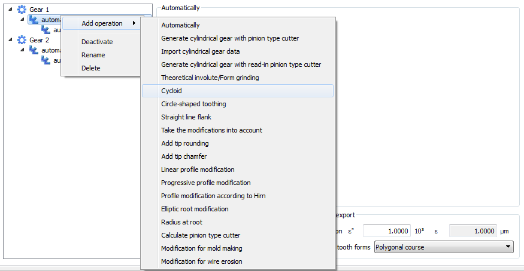

|
|
|


上下文菜单
在操作目录结构组中右键单击可显示上下文菜单。该菜单针对目录中的活动元素（以蓝色背景显示）。

图 15.72：齿形计算中的上下文菜单
上下文菜单提供以下选择选项：
- 添加工序 选择此菜单选项可打开一个子菜单，其中列出可对特定齿轮执行的工序（参见"工序"章）。
- 选择为结果 该结果通常显示在图形中，并用于强度计算。默认设置为在此显示最后一次操作的结果，除非该修形涉及模具制造、线切割或插齿刀。
- 激活/停用 使用此选项可从列表中移除已分配给齿轮的工序，而无需将其删除。该图标随后会标记上红色叉号。 菜单选项可将已停用的工序恢复到活动工序列表中。红色叉号随即消失。
- 重命名 更改工序的名称。请注意，如果您更改工序的名称，这不会更改右侧子窗口中的区域名称。
- 删除 永久移除工序条目及其所有关联参数。
English Original
Context menu
Right-click in the operation directory structure group to display a context menu. This menu refers to the active element in the directory (shown with a blue background).
Figure 15.72: Context menu in the tooth form calculation
The context menu gives you these selection options:
- Add operation Select this menu option to open a sub-menu that lists the operations that can be performed on a particular gear (see chapter Operations).
- Choose as result This result is usually displayed in the graphic and used in the strength calculations. The default setting is for the results of the last operation to be displayed here, unless the modification involves mold making, wire erosion, or a pinion type cutter.
- Activate/Deactivate Use this option to remove an operation that has been assigned to a gear from the list without deleting it. The icon is then marked with a red cross. The menu option returns a deactivated operation to the list of active operations. The red cross then disappears.
- Rename Changes the name of an operation. Note that, if you change the name of an operation, this does not change the area name in the right-hand sub-window.
- Delete Permanently removes an operation entry, along with all its associated parameters.